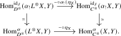
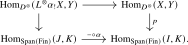

Proposition 14.5.3. Let \((C,\otimes _C,\unit _C)\) be a symmetric monoidal \(\infty \)-category, and let \(i\colon D \hookrightarrow C\) be the inclusion of a full subcategory such that \(i\) admits a left adjoint \(L\colon C \to D\). Assume that for every \(L\)-equivalence \(f\colon x \to y\) in \(C\) and for every \(z \in C\), the morphism \(f \otimes _C \id _z\colon x \otimes z \to y \otimes z\) is also an \(L\)-equivalence. Then the following hold:
- (1)
-
The suboperad \(D^{\otimes }\) of \(C^{\otimes }\) is a symmetric monoidal structure on \(D\);
- (2)
-
The inclusion \(i^{\otimes }\colon D^{\otimes } \hookrightarrow C^{\otimes }\) admits a left adjoint \(L^{\otimes }\colon C^{\otimes } \to D^{\otimes }\) which is a strong symmetric monoidal refinement of the functor \(L\);
- (3)
-
If \(C\) admits small colimits and its tensor product preserves them separately in both variables, then the same holds for \(D\).
Proof. Step 1: Let us start by observing that the assumption on \(L\) implies that for every span \(\alpha \colon I \xleftarrow {f} K \xrightarrow {g} J\) of finite sets the induced functor \[ \alpha _!\colon C^I \xrightarrow {f^*} C^K \xrightarrow {g_{\otimes }} C^J, \qquad (x_i)_{i \in I} \mapsto (\bigotimes _{k \in g^{-1}(j)} x_{f(k)})_{j \in J} \] preserves componentwise \(L\)-equivalences. This is clear for the restriction functor \(f^*\). For the functor \(g_{\otimes }\), it remains to show that if \(x_k \to y_k\) are \(L\)-equivalences in \(C\) for \(k=1, \dots , n\), then their tensor product \(x_1 \otimes _C \dots \otimes _C x_n \to y_1 \otimes _C \dots \otimes _C y_n\) is also an \(L\)-equivalence. For \(n = 2\) this follows by writing this map as a composite \[ x_1 \otimes x_2 \to y_1 \otimes x_2 \simeq x_2 \otimes y_1 \to y_2 \otimes y_1 \simeq y_1 \otimes y_2, \] where the two non-invertible arrows are \(L\)-equivalences by assumption, and the remaining arrows are the braiding equivalences. The general case follows by induction.
Step 2: We will now show that \(i^{\otimes }\) has a left adjoint \(L^{\otimes }\). To simplify notation, we will treat objects of \(D\) as objects in \(C\) without writing the inclusion functor \(i\). By the pointwise criterion for adjunctions from Lemma 21.1.4, we may construct \(L^{\otimes }\) objectwise, and we set \(L^{\otimes }(\{x_k\}_{k \in K}) := \{L(x_k)\}_{k \in K}\). The unit map \(\eta _X\colon X \to L^{\otimes }X\) is given by the collection of maps \(\{\eta _{x_k}\colon x_k \to L(x_k)\}_{k \in K}\). We must show that for any other \(Y \in D^{\otimes }\) the precomposition map \[ \Hom _{D^{\otimes }}(L^{\otimes }X, Y) \xrightarrow {- \circ \eta _X} \Hom _{C^{\otimes }}(X,Y) \] is an equivalence. It suffices to check this on fibers \(\Hom _{C^{\otimes }}^{\alpha }(-,-)\) over any span \(\alpha \colon K \xleftarrow {f} S \xrightarrow {g} J\). As in the proof of Proposition 14.3.11, we will reduce this to the case of the identity span where it will follow from the adjunction \(L \dashv i\). Let \(X \to \alpha _!X\) and \(L^{\otimes }X \to \alpha _!L^{\otimes }X\) denote \(p_C\)-cocartesian lifts of \(\alpha \) starting in \(X\) and \(L^{\otimes }X\), respectively, so that precomposition with these maps induces two vertical equivalences as follows:

It thus suffices to show that the top map is an equivalence. Using the identification \(C^{\otimes }_J \simeq C^J\), we may identify this map with the product over \(j \in J\) of the maps \[ \Hom _C((\alpha _!L^{\otimes }X)_j, Y_j) \xrightarrow {- \circ \alpha _!(\eta _X)_j} \Hom _C((\alpha _!X)_j, Y_j), \] so we may show that each of these is an equivalence. Applying the adjunction \(L \dashv i\), this map is in turn equivalent to the map \[ \Hom _D(L(\alpha _!L^{\otimes }X)_j, Y_j) \xrightarrow {- \circ L\alpha _!(\eta _X)_j} \Hom _D(L(\alpha _!X)_j, Y_j). \] But now note that the map \(\eta _{x_k}\colon x_k \to L(x_k)\) is an \(L\)-equivalence for each \(k\) due to full faithfulness of \(i\colon D \hookrightarrow C\), and so by step 1 the maps \(\alpha _!(\eta _X)_j\colon \alpha _!(X)_j \to \alpha _!(L^{\otimes }X)_j\) are also \(L\)-equivalences for all \(j\), i.e., each \(L\alpha _!(\eta _X)_j\) is an isomorphism. This shows the existence of the left adjoint \(L^{\otimes }\). The same argument as in Proposition 14.3.11 shows that \(L^{\otimes }\) is a morphism of \(\infty \)-operads.
Step 3: We will now show that the suboperad \(D^{\otimes } \subseteq C^{\otimes }\) is a symmetric monoidal \(\infty \)-category. Given an object \(X \in D^{\otimes }\) and a span \(\alpha \), we need to show that there exists a \(p_D\)-cocartesian lift of \(\alpha \) in \(D^{\otimes }\) starting in \(X\). We construct this as the composite \[ X \to \alpha _!X \xrightarrow {\eta } L^{\otimes }\alpha _!X, \] where the first map is a \(p_C\)-cocartesian lift of \(\alpha \) in \(C^{\otimes }\), and the second map is the unit for the adjunction \(L^{\otimes }\dashv i^{\otimes }\). To show that this map is \(p_D\)-cocartesian, we have to show that for every other object \(Y \in D^{\otimes }\) the following commutative square is a pullback square:

But by the adjunction equivalence \(\Hom _{D^{\otimes }}(L^{\otimes }\alpha _!X, Y) \simeq \Hom _{C^{\otimes }}(\alpha _!X,Y)\) this immediately follows from \(p_C\)-cocartesianness of the map \(X \to \alpha _! X\). Thus \(p_D\) is a cocartesian fibration. Since \(D^{\otimes }\) is already an \(\infty \)-operad, Lemma 14.2.4 shows that it encodes a symmetric monoidal \(\infty \)-category. This proves part (1).
Step 4: For (2), it remains to show that \(L^{\otimes }\) is strong symmetric monoidal, i.e., that it sends \(p_C\)-cocartesian morphisms to \(p_D\)-cocartesian morphisms. Given a \(p_C\)-cocartesian morphism \(X \to \alpha _!X\), applying \(L^{\otimes }\) gives \(L^{\otimes } X \to L^{\otimes }\alpha _! X\), and we need to show that this agrees with the composite \(L^{\otimes }X \to \alpha _!L^{\otimes } X \xrightarrow {\eta } L^{\otimes }\alpha _!L^{\otimes }X\). But this again follows from the assumption on \(L\): since \(\eta _X \colon X \to L^{\otimes } X\) is an \(L\)-equivalence, so is the map \(\alpha _!X \to \alpha _!L^{\otimes } X\), hence applying \(L^{\otimes }\) gives an isomorphism.
Step 5: Assume that \(C\) admits small colimits and that its tensor product preserves them separately. Then \(D\) admits small colimits, with \[ \colim _{j\in J}X_j\simeq L\bigl (\colim _{j\in J}iX_j\bigr ) \] for every small diagram \((X_j)_{j\in J}\) in \(D\). Together with the formula \[ X\otimes _DY\simeq L(iX\otimes _CiY), \] the assumptions on the tensor product and on \(L\) now imply part (3) by an easy computation. □
Generated from the authoritative LaTeX source.